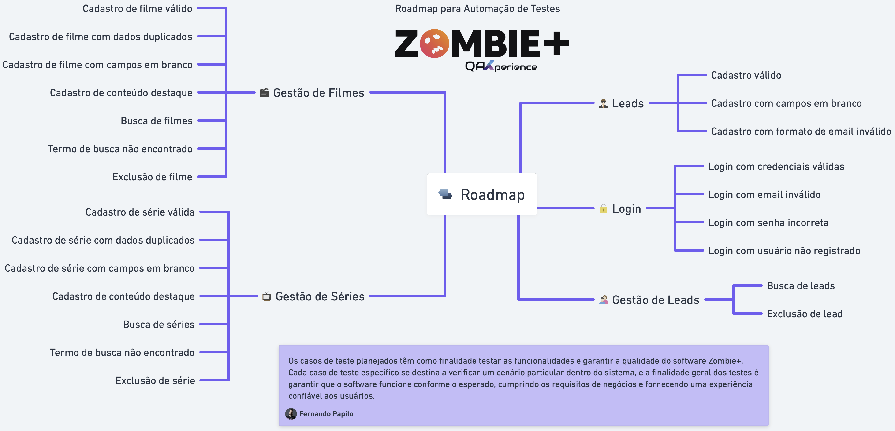

Suíte de testes de regressão automatizada de alta performance para a plataforma Zombie+. Cobertura completa de cenários de UI, APIs REST autenticadas, banco de dados PostgreSQL e relatórios ricos com Allure Reports.
O Zombie+ é uma plataforma de streaming temática de apocalipse zumbi. Possui arquitetura moderna desacoplada com Single Page Application (React) no Frontend, API RESTful (Node.js/Express) no Backend e banco relacional PostgreSQL.
Administração de catálogo com upload de pôsteres, vínculos de produtoras, busca dinâmica e exclusão com modal de confirmação.
Módulo de séries com controle de temporadas, ano de lançamento, status de destaque no carrossel e formulários reativos.
Landing page de pré-lançamento com modal interativo de cadastro na fila de espera e feedback visual dinâmico.
Painel administrativo protegido com JSON Web Token (JWT) e criptografia de senhas.
Visualize os relatórios detalhados com gráficos de execução, evidências de vídeo, traces do Playwright, requisições de API e screenshots na falha.
Acesse o dashboard interativo do Allure Report gerado na esteira de CI/CD pelo GitHub Actions com todas as métricas em tempo real.
Mapa mental estruturado detalhando os fluxos principais, validações de regra de negócio e tratamentos de exceção automatizados.

A esteira de CI/CD sobe todo o ecossistema de microsserviços via Docker Compose, executa os testes em container isolado com interface gráfica virtual (Xvfb) e publica os resultados no GitHub Pages.
Levanta os contêineres do PostgreSQL, API Node.js, Frontend React e socat proxies em rede isolada.
Garante que o banco, a API REST (/health) e a UI web estejam 100% prontos antes de iniciar os testes.
Executa a suíte com Gradle e Java 21 gravando traces, logs detalhados e screenshots em caso de falha.
Compila os resultados, mantém o histórico de tendências e faz o deploy automático para este portal.